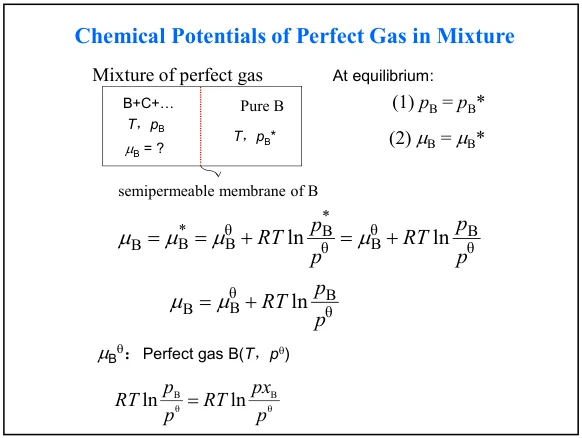
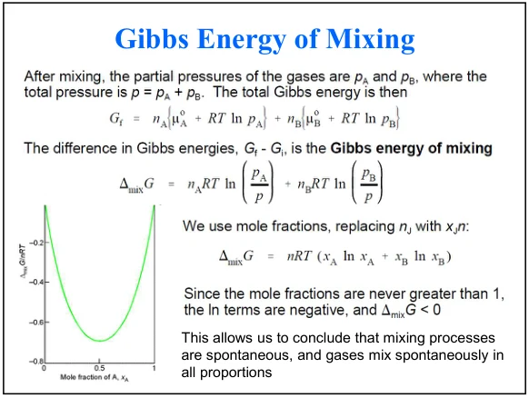
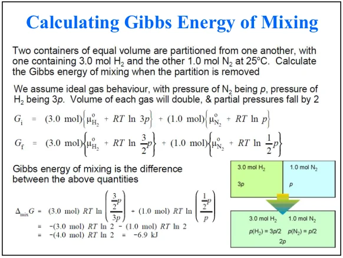
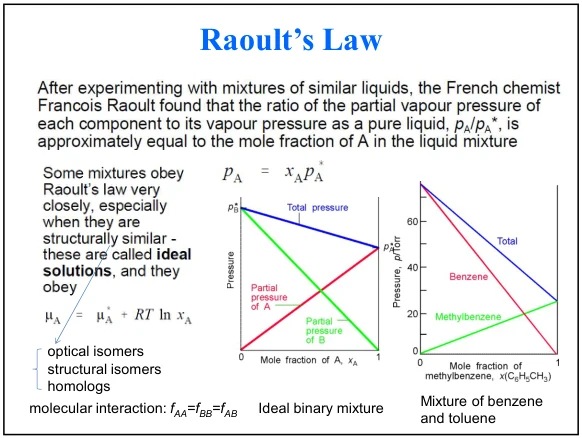
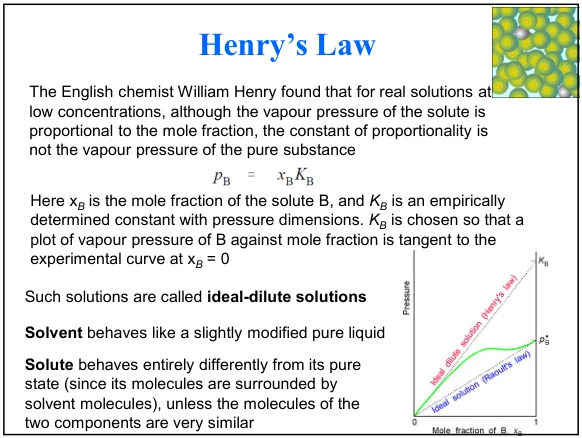
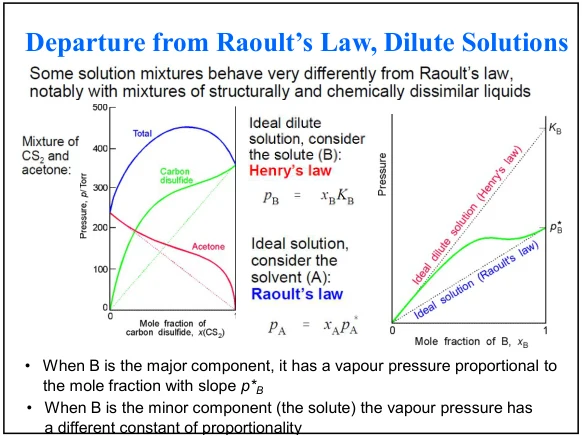
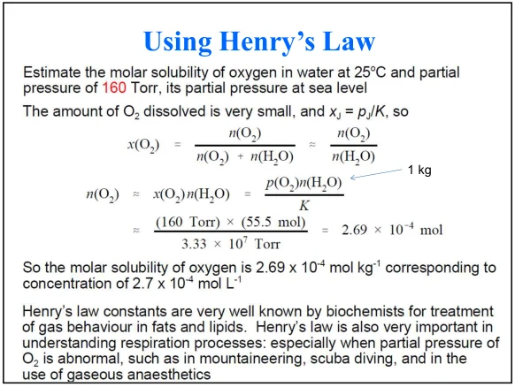
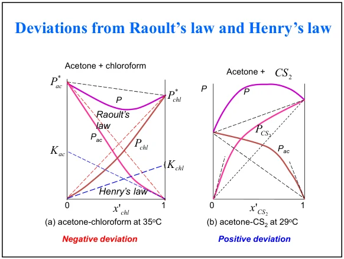
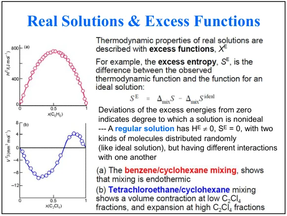
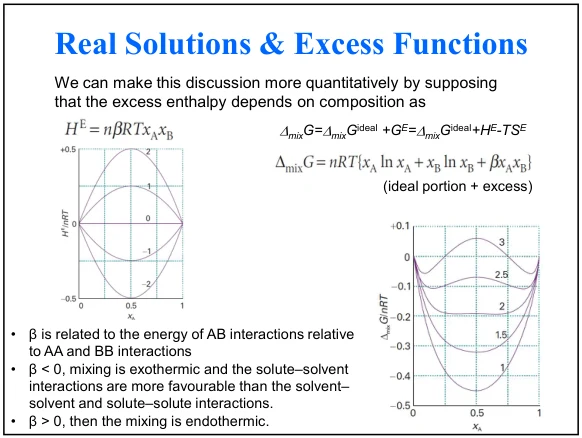

12 · THERMODYNAMICS OF MIXTURES II
混合热力学、Raoult与Henry定律及真实溶液
依课件顺序整理知识体系、公式条件、计算例题和易混概念。
12.1 · COURSE NOTES
混合过程、参考态与化学势
本讲承接第11讲偏摩尔量和化学势，讨论理想气体混合、理想溶液、理想稀溶液和真实溶液。文件名为20261022，投影片页眉为2026/10/21，来源采用PDF页码（12页，每页最多两张投影片）。本讲的模型需明确同温、同压比较的初始纯物质状态。
来源：PChem1_lec12 Mixture2 20261022.pdf，第1–12页；稳定性一节为模型推导拓展。
12.2 · COURSE NOTES
理想气体的化学势与混合Gibbs能
理想混合气体pᵢ=xᵢp。μᵢ°是标准压力下纯理想气体的化学势，μᵢ*是在混合物总压p下纯物质的化学势；二者参考压力通常不同。通过只允许i通过的半透膜，平衡时两侧μᵢ相等，理想气体因而具有相同分压。
该混合公式比较同T、同p下的分开纯组分与最终混合物。0<xᵢ<1时各对数为负，理想气体混合Gibbs能降低；若初始压力不同，先回到各自初态写μ，再计算实际G变化。


来源：PChem1_lec12 Mixture2 20261022.pdf，第1–12页；稳定性一节为模型推导拓展。
12.3 · COURSE NOTES
混合熵、焓与体积
ΔmixH = 0， ΔmixV = 0 （同T、p的理想模型）
理想气体内能与焓只依赖温度，混合没有额外相互作用焓。理想溶液模型也给出零混合焓和体积。真实液体的混合焓、混合体积可以非零。对固定总量的二元理想混合物，等摩尔组成给出最大混合熵。
来源：PChem1_lec12 Mixture2 20261022.pdf，第1–12页；稳定性一节为模型推导拓展。
12.4 · COURSE NOTES
等体积不同初压：先追踪分压
课件例：相同体积V的两容器，在25 °C分别放3.0 mol H₂和1.0 mol N₂。令N₂初压为p，则H₂初压为3p。撤去隔板后每种气体占据2V，分压分别为1.5p和0.5p，总压2p。
直接用最终xH₂=0.75、xN₂=0.25代入同压混合公式，只得到把两种纯气体都先放在最终总压2p时的混合贡献，约−5.58 kJ；它与本题实际初态不同。应逐组分使用最终分压除以各自初始压力。

来源：PChem1_lec12 Mixture2 20261022.pdf，第1–12页；稳定性一节为模型推导拓展。
12.5 · COURSE NOTES
液体化学势与Raoult定律
液相与气相中同一组分平衡时μᵢ(l)=μᵢ(g)。在蒸气近似理想、低压下忽略液体压力修正时，把纯液体饱和蒸气压pᵢ*作为参照：
理想溶液全组成范围内每一组分都满足Raoult定律pᵢ=xᵢpᵢ*，因此μᵢ=μᵢ*+RT ln xᵢ。其分子图像是异种与同种相互作用接近，混合没有显著额外焓或体积变化。
x是液相摩尔分数，y是气相摩尔分数；挥发性更高的组分常在气相富集。非挥发性溶质可近似pB=0，不能对两个都挥发的液体直接套只含溶剂的式子。

来源：PChem1_lec12 Mixture2 20261022.pdf，第1–12页；稳定性一节为模型推导拓展。
12.6 · COURSE NOTES
Henry定律与理想稀溶液
本课KB采用压力除以摩尔分数的定义，因此具有压力单位。KB由无限稀释端的切线确定，一般不等于纯B蒸气压pB*。同一分压下，这一定义的K越大，溶解的摩尔分数越小。
| 模型/极限 | 溶剂A | 溶质B |
|---|---|---|
| 理想溶液 | 全组成范围满足Raoult | 全组成范围满足Raoult |
| 理想稀溶液 | 接近纯A端满足Raoult | 无限稀释端满足Henry |
文献另有c=k·p等Henry常数约定，数值和单位不可直接互换。带化学反应、解离或强络合的溶质，总分析浓度也不能无条件等同于Henry定律对应的物理溶解形态。


来源：PChem1_lec12 Mixture2 20261022.pdf，第1–12页；稳定性一节为模型推导拓展。
12.7 · COURSE NOTES
溶解氧例题：分压、摩尔分数和质量摩尔浓度
课件给25 °C、氧气分压160 Torr、K=3.33×10⁷ Torr，并以1.000 kg水为基准，n(H₂O)≈55.5 mol。
n(O₂) ≈ x(O₂)n(H₂O) ≈ 2.67×10−4 mol
所以质量摩尔浓度约2.67×10−4 mol·kg−1。课件列2.69×10−4，按所列有效数字直接复算略有舍入差异。只有再近似1 kg稀水溶液体积约1 L，才可写成约2.7×10−4 mol·L−1。使用氧气分压而非混合气总压。

课件以呼吸与潜水作气体溶解的背景例子。这里讨论升高分压提高溶解量的物理趋势，实际生理过程还涉及结合、反应和传质。
来源：PChem1_lec12 Mixture2 20261022.pdf，第1–12页；稳定性一节为模型推导拓展。
12.8 · COURSE NOTES
Raoult定律偏差与活度
异种分子吸引较弱时，组分更易逸出，常表现正偏差；异种作用更强时，常表现负偏差。课件以丙酮–CS₂和丙酮–氯仿比较，说明不能把整条实验曲线都替换为理想直线。
γᵢ ≈ pᵢxᵢpᵢ*
此处活度系数采用Raoult纯液体标准态，并假设蒸气理想及液相压力修正可忽略。溶质若改用Henry标准态，γ的数值和极限定义也随之改变。偏差大小与能否分相有关，但看到正偏差并不足以断言一定分层。

来源：PChem1_lec12 Mixture2 20261022.pdf，第1–12页；稳定性一节为模型推导拓展。
12.9 · COURSE NOTES
超额函数与规则溶液
超额量定义为真实溶液与同T、p、组成下理想溶液的性质之差：Xᴱ=X−Xideal。理想溶液的超额量为零。规则溶液模型设Sᴱ=0而Hᴱ可非零，保留随机混合熵并用相互作用参数描述非理想焓。
ΔmixGnRT = x ln x + (1−x)ln(1−x) + βx(1−x)
这里x=xA，β为无量纲相互作用参数，正β使混合焓为正，负β使混合放热。以上等式是课件在固定温度下的模型；跨温度计算H或S还需说明β随温度如何变化。


来源：PChem1_lec12 Mixture2 20261022.pdf，第1–12页；稳定性一节为模型推导拓展。
12.10 · COURSE NOTES
拓展：局部稳定性与分相判断
对上一节固定T下的对称规则溶液，定义无量纲摩尔混合能g(x)。其曲率为：
g″>0表示对微小组成涨落局部稳定，g″<0表示局部不稳定。在x=0.5处g″=4−2β，因此β>2会出现中心组成不稳定区。临界条件β=2、x=0.5只适用于这个对称模型。整体平衡还需要比较分相后的总G，使用公切线判据；局部曲率不能替代整个相图。
来源：PChem1_lec12 Mixture2 20261022.pdf，第1–12页；稳定性一节为模型推导拓展。
12.11 · COURSE NOTES
复习与第12讲测验
考前检查：混合前后压力是否一致？气相分压是否用pᵢ=xᵢp？x、y、质量摩尔浓度是否区分？Henry常数采用哪种定义？超额量的理想参考态是什么？规则溶液的β是否固定在给定温度？
来源：PChem1_lec12 Mixture2 20261022.pdf，第1–12页；稳定性一节为模型推导拓展。